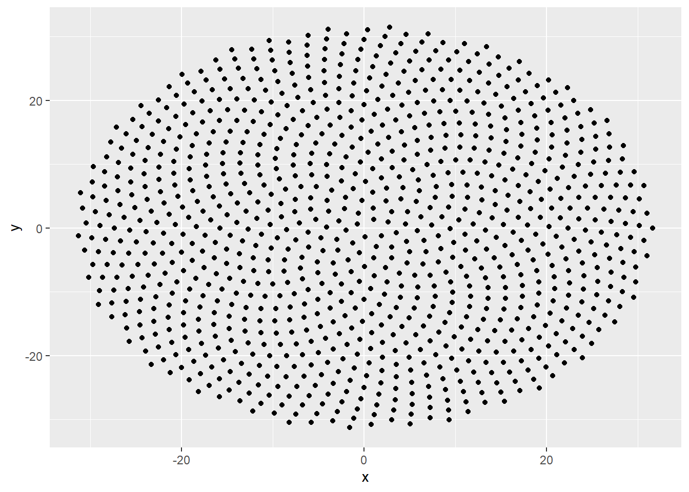

I have always found a sense of peace through painting and drawing geometric patterns. After all, geometry is the language of nature. I draw my inspiration from the ancient and medieval geometric art to recreate the patterns using a ruler and compass on a tracing paper, then transfer to the painting paper(watercolor). This time though, I wanted to do this using a computer program. This project is one example pattern created using the Fibonacci spirals.
Before writing this post, I wasn’t familiar with the term Fibonacci spirals. I was only looking to find a way to draw some of my geometric patterns in R. I stumbled upon a picture of the center of a sunflower, showing the beautiful arrangement of the seeds in the middle.And I wondered, if I could create that pattern…
This post helped towards understanding the mathematics behind the arrangement. Three things noted in the arrangement are
The seeds spiral outward, with each seed positioned at a fixed angle relative to its predecessor.
The fixed angle is given by \(\Gamma = 2\pi(1-\phi)\), where \(\phi = 1.61803...\) is the golden ratio.
The ith seed is placed at a radial distance of \(\sqrt(i)\)
Hence, in the polar coordinates, we can specify \([r,\theta] = [\sqrt(i), \Gamma*i]\). Since I wanted to plot the points on cartersian coordiantes, I used the polar to Cartesian conversion factors:
\(x = rCos(\theta)\)
\(y = rSin(\theta)\) and plugged in the values of r and the fixed angle \(\Gamma\)
x<- c()
y <- c()
goldenratio <- 1.618
gamma <- 2*pi*(1-goldenratio)
for (i in 1:1000){
x<- c(x,sqrt(i)*cos(i*gamma))
y<- c(y,sqrt(i)*sin(i*gamma))
}
df <- data.frame(x = x, y = y)
p <- ggplot(data = df, aes(x=x,y=y))+
geom_point()
p
I generated the animation here using gganimate() package. I experimented with values of \(\phi\) other than golden ratio in the graphic.
amber.m.ahmed@utexas.edu
Copyright © , Amber Ahmed. All rights reserved.